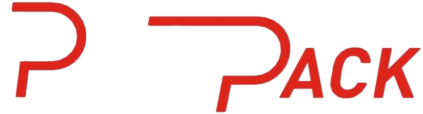
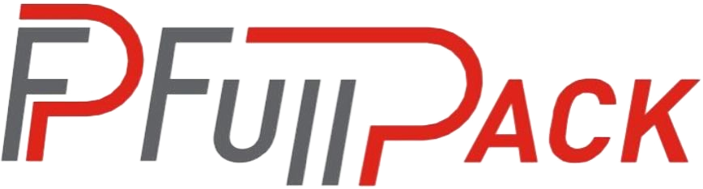
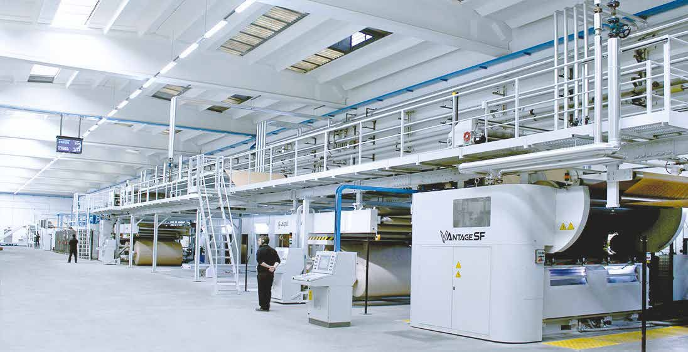
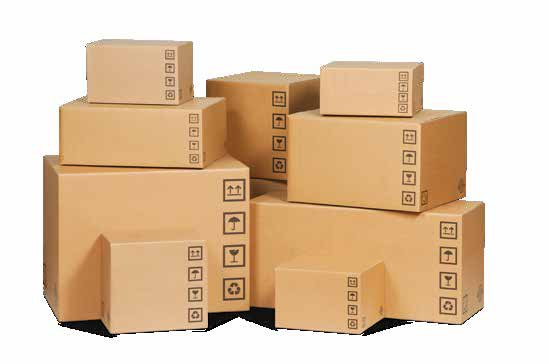
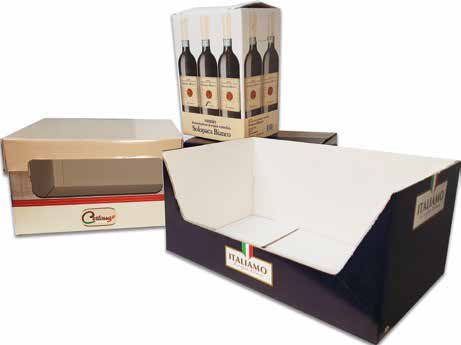
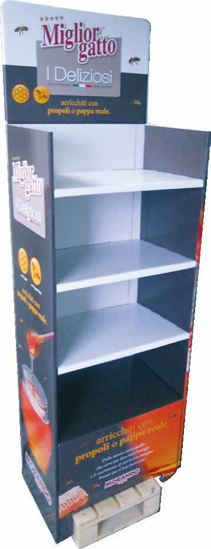
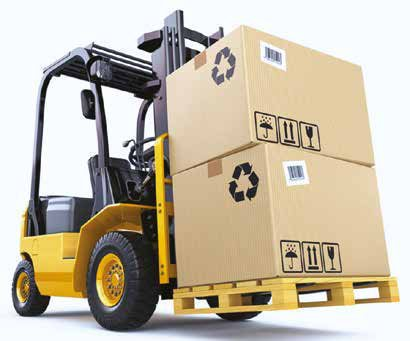
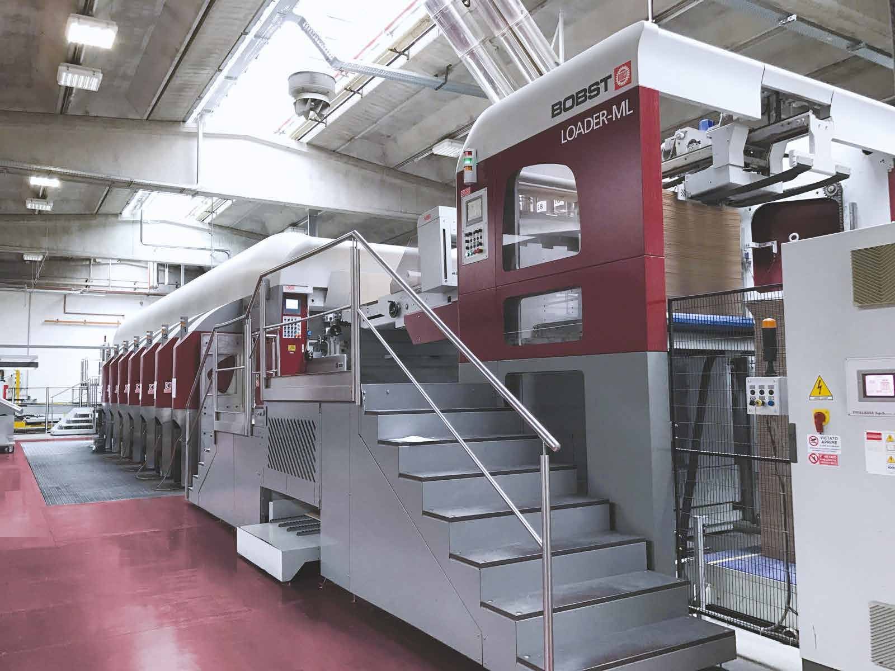

Full Pack S.r.l. — Scatolificio, Campania
Proteggiamole vostreidee
Dalla bobina di carta alla cassa americana consegnata: il nostro processo, macchina per macchina, come avviene davvero nei nostri stabilimenti.


Dalla bobina di carta alla cassa americana consegnata: il nostro processo, macchina per macchina, come avviene davvero nei nostri stabilimenti.
Sui porta-bobine a bracci la copertina kraft e la carta per onda si svolgono da bobine di 1,25 m di diametro. Ogni carta avvolge i cilindri preriscaldatori cromati, scaldati a vapore, per entrare nel single facer alla giusta temperatura e umidità.
Tra i due cilindri ondulatori scanalati, a 180 °C, la carta per onda prende la forma sinusoidale. Il rullo incollatore deposita la colla d'amido solo sulle creste; il rullo di pressione vi salda la prima copertina. La singola faccia sale verso il ponte.
Sul ponte la singola faccia si accumula in festoni, il polmone che disaccoppia wet end e dry end. Scende nell'incollatrice, dove un secondo rullo bagna d'amido le creste, e incontra la copertina inferiore nel double facer: piastre calde a vapore e un tappeto zavorrato saldano il foglio e lo asciugano.
Lo slitter-scorer taglia la fascia in quattro strisce con i coltelli circolari al carburo e imprime le cordonature delle falde con le ruote maschio/femmina. La taglierina rotativa a lame elicoidali produce i fogli a misura, che si embricano sul nastro e scendono sull'impilatore.
Il carrello preleva il bancale di fogli dall'impilatore e lo porta al sollevatore del casemaker. La pila sale a quota tavola e viene spinta sul mettifoglio: le cinghie a vuoto prendono il foglio dal fondo della pila e lo accelerano verso il primo gruppo stampa.
In ogni gruppo flexo la racla a camera dosa l'inchiostro all'acqua sull'anilox ceramico, l'anilox lo cede al cliché fotopolimerico e il cilindro di pressione lo trasferisce sul cartone, con il lato stampa rivolto in basso. Due colori: il rosso Full Pack e il nero.
Le ruote cordonatrici maschio/femmina imprimono le quattro pieghe verticali; i coltelli slotter aprono gli intagli fra le falde e rifilano la linguetta d'incollaggio, mentre lo sfrido viene aspirato. Il foglio è ora lo sviluppo piano di una cassa americana FEFCO 0201.
Le guide curve ripiegano a 180° prima la fiancata con la linguetta: la testa di incollaggio vi deposita i cordoli di colla, poi l'altra fiancata si posa sopra. La cassa esce piatta con la stampa rivolta in alto; il contatore-espulsore forma pacchi da 25 casse, pressati e reggiati con due regge in PP.
Il pallettizzatore a portale dispone i pacchi a strati alternati su un bancale EPAL; angolari in cartone e regge in PET bloccano il carico. Sulla tavola rotante il carrello porta-film sale e scende avvolgendo il bancale con film estensibile prestirato.
Lo stesso carrello preleva il bancale avvolto e lo carica dal fianco del semirimorchio centinato, con la tenda aperta: due file di bancali EPAL per tutta la lunghezza. Forche a 1,25 m, inserimento sul piano, ritiro.
Tenda chiusa e tensionata, DDT firmato. Dai nostri stabilimenti in Campania al vostro magazzino: un servizio sicuro e puntuale, con un'attenzione particolare alla salute e all'ambiente.

L'elevata qualità delle lavorazioni, l'affidabilità di un servizio sicuro e puntuale, il costante aggiornamento del parco macchine e delle professionalità interne hanno fatto della Full Pack una realtà imprenditoriale dedita all'innovazione e alla qualità gestionale, con un'attenzione particolare ai temi della salute e al rispetto dell'ambiente.
La filosofia di lavoro ci spinge a instaurare con i nostri clienti un rapporto di collaborazione, per assicurare la miglior soluzione auspicabile nell'ottica di un continuo miglioramento del prodotto.
Bobine kraft e carta per onda, preriscaldate a vapore sui cilindri cromati.
Cilindri ondulatori a 180 °C, colla d'amido sulle creste, prima copertina.
Double facer a piastre calde, slitter-scorer, taglierina rotativa, impilatore.
Flexo post-print: anilox ceramico, cliché fotopolimerico, inchiostri all'acqua.
Cordonatura maschio/femmina, intagli fra le falde, rifilo della linguetta.
Due pieghe a 180° su guide e tappeti, colla PVA sulla linguetta, cassa piatta.
Pacchi da 25 reggiati, bancale EPAL, angolari, regge PET, film estensibile.
Carico laterale sul centinato con carrello, 33 bancali per viaggio.
Una gamma di linee produttive altamente flessibili permette la totale personalizzazione degli imballi, dalle piccole dimensioni ai grandi formati, con stampa in alta definizione.

La tradizionale scatola in cartone ondulato a slottatura regolare, prodotta da casemakers in linea che stampano, tagliano, piegano e incollano in un'unica soluzione, fino a 4 colori flexo.

Vassoi standard e wrap-around per linee automatiche, espositori, divisori, interni e interfalde stampate. Qualsiasi forma, con fustelle rotative di medio-grandi dimensioni.

Espositori automontanti, fondo e coperchio preincollati per il punto vendita (Pack&Show), fondi automatici, pallet in cartone ondulato e prodotti ad hoc sviluppati in partnership.

Per prodotti voluminosi e ingombranti, anche a doppia onda: proteggono dagli urti e dalla pressione della sovrapposizione e riducono il numero di spedizioni.
Separatori per vetreria e imbottigliamento (acqua, vino, birra e alcolici), flaconi e ampolle per cosmetica e farmaceutica, micro alveari per l'elettronica, maxi alveari per l'industria.
Interfalde antiscivolo in fogli o lastre, separatori per bancali, protezione dei bordi e coperture, in tutte le composizioni e spessori d'onda.
Offset per il massimo in resa cromatica e precisione, flexo diretta ad alta definizione in tricromia e quadricromia, anche su carte patinate o con verniciatura.
La copertina viene stampata in bobina e ribobinata prima dell'ondulatore: definizione da stampa diretta, fino a 8 colori, con costi del prodotto finale ridotti.
Ogni settore ha esigenze diverse di protezione, logistica e presentazione: sviluppiamo l'imballo insieme a voi, dal campione alla produzione in serie.
Casse per acqua, vino, birra e alcolici con alveari interni; vassoi wrap-around per linee di confezionamento automatiche.
Separatori e alveari dimensionati sul vetro, per proteggere bottiglie e contenitori durante trasporto e stoccaggio.
Alveari per flaconi e ampolle, scatole stampate in alta definizione, controlli di igiene e qualità certificati.
Micro alveari e interni fustellati per componenti e dispositivi, con precisione di taglio da linee automatiche.
Scatole di grandi dimensioni a doppia onda, maxi alveari, interfalde e pallet in cartone per prodotti voluminosi.
Espositori automontanti, Pack&Show con fondo e coperchio preincollati, stampa offset per il massimo impatto a scaffale.
La qualità dei nostri prodotti è certificata da severi controlli, sia interni che da parte di auditor esterni. I nostri stabilimenti mantengono costante l'attenzione alle direttive in materia di energia, ambiente e sicurezza: gli imballi vengono realizzati con materie prime certificate e riciclabili, utilizzando con attenzione le risorse energetiche ed evitando sprechi.

C.da Campoceraso, Area PIP, snc
83030 Torre Le Nocelle
Inserite le misure interne e l'onda: ottenete lo sviluppo piano FEFCO 0201 con le maggiorazioni di cordonatura, la superficie di cartone e il peso indicativo. Un punto di partenza per il preventivo.
Formula: lunghezza = 2L + 2W + maggiorazioni di cordonatura (in funzione dello spessore) + linguetta 35 mm; larghezza = H + W + maggiorazioni. Grammature indicative per onda. Le misure definitive vengono confermate dal nostro ufficio tecnico in base a carta, stampa e linea di produzione.
Usa queste misure per il preventivoCompilate i campi: il modulo prepara una email al nostro ufficio commerciale con tutti i dati, pronta da inviare dal vostro programma di posta. Rispondiamo con tempi, quantità minime e un preventivo puntuale.
Misure interne (L × W × H), tipo di cassa o fustellato, onda desiderata o peso del contenuto, quantità, numero di colori di stampa e luogo di consegna. Il calcolatore qui sopra vi aiuta a stimare lo sviluppo.
File vettoriali (PDF o AI) con testi in tracce e colori in tinta piatta o quadricromia. Il nostro ufficio tecnico prepara il tracciato fustella e verifica la resa su cartone prima di realizzare i cliché.
Onde N, E, B e C in onda singola, EB, BC e BCH in doppia e tripla onda, con copertine kraft, bianche, patinate o verniciate e carte certificate FSC® Chain-of-Custody.
Sì: sviluppiamo campioni e piccole serie per validare l'imballo prima della produzione. Quantità minime e tempi dipendono dal prodotto e vengono indicati nel preventivo.
Piatte, in pacchi reggiati su bancali EPAL avvolti con film estensibile, con il nostro servizio di consegna dalle sedi di Napoli e Avellino.
Sistema qualità UNI EN ISO 9001:2015 e catena di custodia FSC®; gli stabilimenti applicano le direttive su energia, ambiente e sicurezza con controlli periodici.
Inviateci misure, quantità e un'idea del prodotto: vi proponiamo la soluzione più adatta e un preventivo puntuale.